AI Reading Assistant
The product team wanted readers to be able to ask questions about what they were reading, without leaving the e-book. I designed the whole experience, from the first idea to the shipped feature. That included the entry point, the chat, usage limits, feedback, and every error and empty state.
The challenge
Every message costs tokens, so long open-ended chats get expensive fast. Answers from a language model can be wrong. The feature also had to follow content policies. The design had to keep conversations short and focused while still feeling useful and friendly.
What I did
- Mapped where a question naturally starts: a passage the reader has just selected
- Explored three placements for the entry point in the text-selection menu
- Designed visible usage limits that feel like an allowance rather than a block
- Wrote the trust messaging and designed the answer-feedback loop
- Specified every state for developers, then checked the build against the designs
Start from the reader's own selection
The assistant opens from the menu that appears when a reader selects text. I explored three toolbar layouts for where the new action sits next to highlight, copy, share and translate. The goal was an action people would find without crowding the tools they already use.
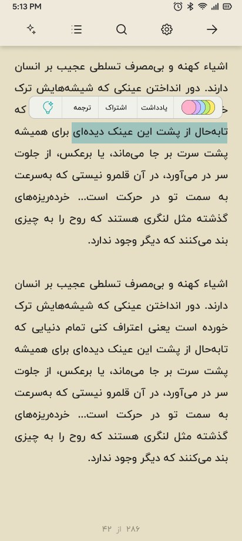
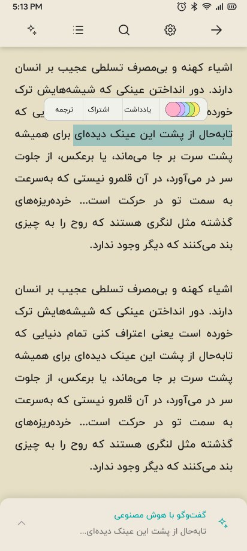
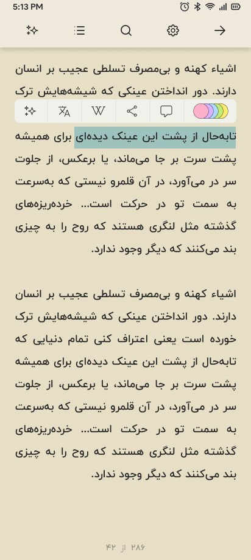
Pin the passage, suggest the question
The selected passage stays pinned at the top of the chat, so every answer has a clear context. One-tap prompts like “Explain this part” and “Say this more simply” cover the most common needs. They keep messages short, which keeps costs down.
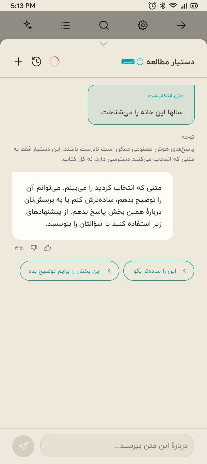
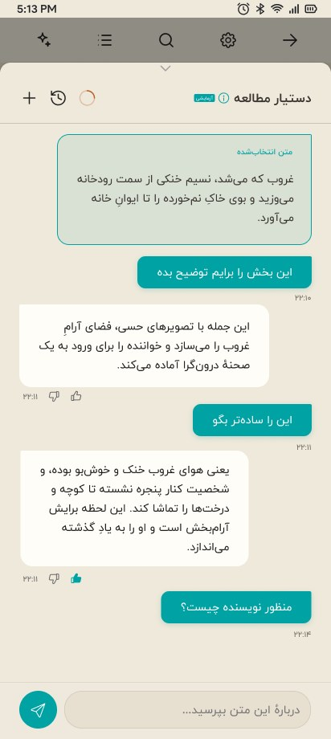
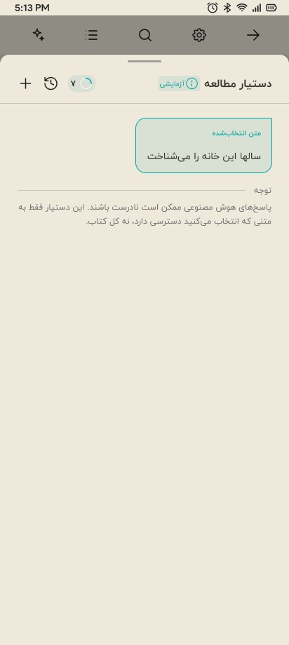
Make the limits visible and fair
Instead of cutting people off without warning, readers see a weekly allowance, such as “7 of 10 messages left”, and when it resets. Each conversation also has a cap. When a reader hits it, a clear message invites them to start a new chat, which keeps the context window short.
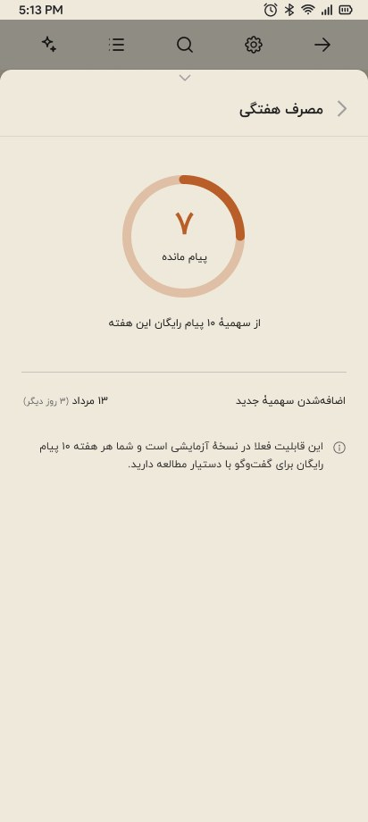
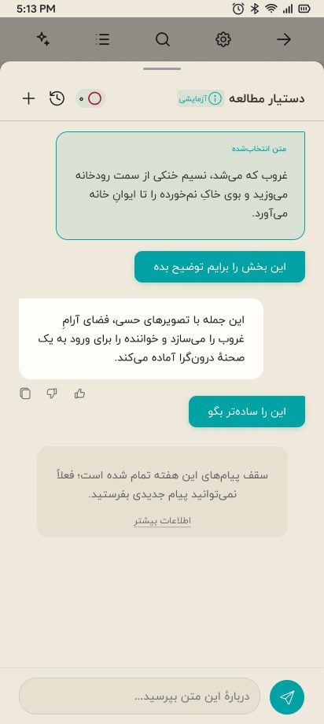
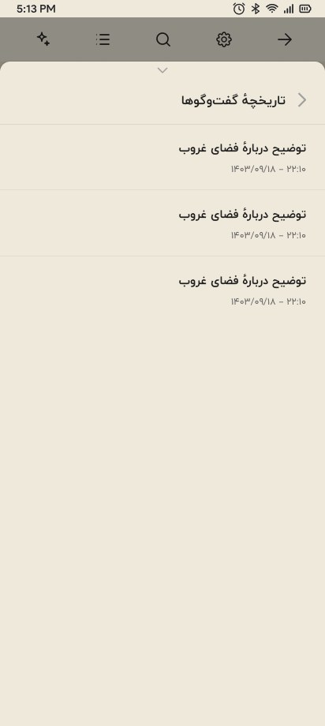
Be honest about what AI can and can't do
An “Experimental” badge and an info sheet explain that answers may be inaccurate. They also say the assistant only sees the selected text, not the whole book. Thumbs up and down on every answer, plus an optional “What was wrong with this answer?” form, give the product team a steady stream of quality signals.
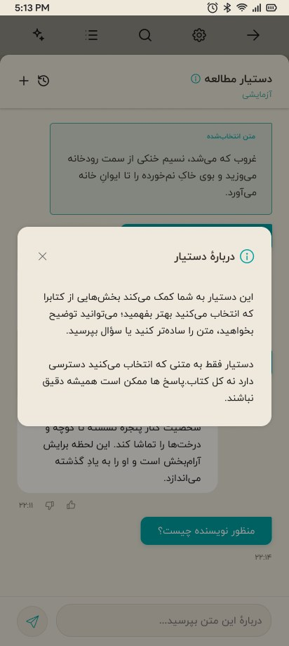
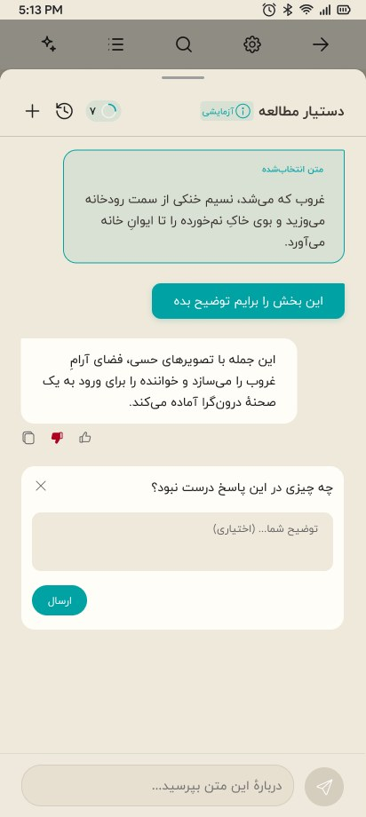
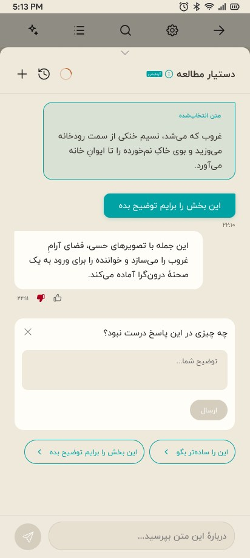
From Figma to the live app
I reviewed the developer builds against the designs and logged precise fixes. The notes on the right are from that review round. The final screens are from the shipped app, with the new “Summarize this part” action.
- Add copy icon to answers
- Message padding → 16
- Resize icon + experimental badge
- AI error message state
- Long-chat behavior
- No-suggestion state
- Loading animation
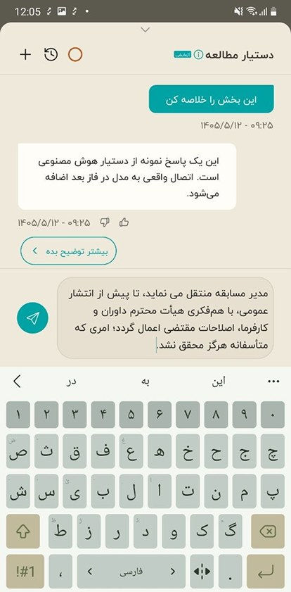
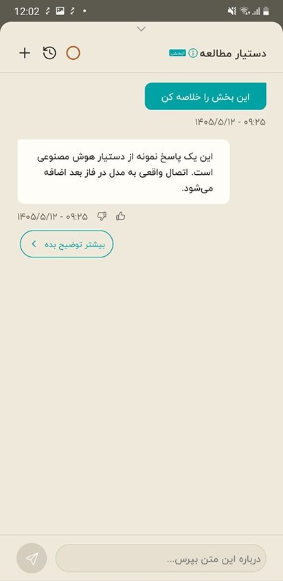
Interface in Persian, read right to left · captions translated
The assistant shipped inside the reader as an experimental feature. Usage limits and focused prompts were part of the design from the start to control token cost, and the feedback on every answer gives the product team a steady measure of answer quality.
- 3entry-point layouts explored before choosing one
- 14screens and states specified, including errors and empty states
- 7fixes logged in design QA before release
What I’d measure: the thumbs-up rate on answers, the average number of messages per conversation (which drives token cost), and how many readers use the assistant again within a week.
All five case studies
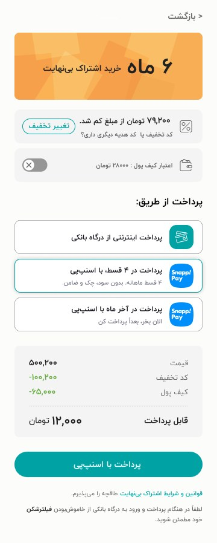
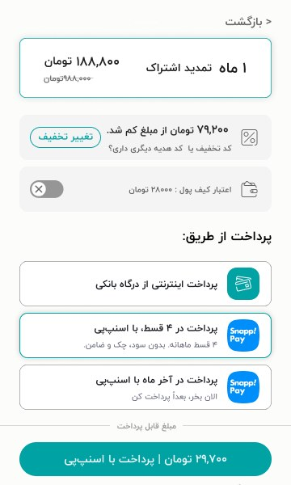
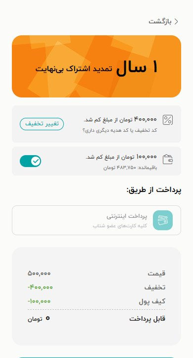
Checkout & Pay Later
Like what you see?
I’m open to UI/UX designer roles in the Netherlands, and happy to walk you through this project.